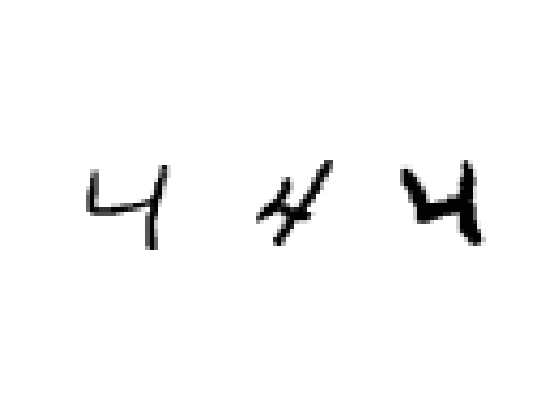

Contents
clear; clc; close all;
load mnistdata;
Select digit
digit = 5;
train = 1;
Visualize a selected train/test digit
if digit == 0
if train == 1
TestTrainDigit = train0;
else
TestTrainDigit = test0;
end
elseif digit == 1
if train == 1
TestTrainDigit = train1;
else
TestTrainDigit = test1;
end
elseif digit == 2
if train == 1
TestTrainDigit = train2;
else
TestTrainDigit = test2;
end
elseif digit == 3
if train == 1
TestTrainDigit = train3;
else
TestTrainDigit = test3;
end
elseif digit == 4
if train == 1
TestTrainDigit = train4;
else
TestTrainDigit = test4;
end
elseif digit == 5
if train == 1
TestTrainDigit = train5;
else
TestTrainDigit = test5;
end
elseif digit == 6
if train == 1
TestTrainDigit = train6;
else
TestTrainDigit = test6;
end
elseif digit == 7
if train == 1
TestTrainDigit = train7;
else
TestTrainDigit = test7;
end
elseif digit == 8
if train == 1
TestTrainDigit = train8;
else
TestTrainDigit = test8;
end
elseif digit == 9
if train == 1
TestTrainDigit = train9;
else
TestTrainDigit = test9;
end
end
f1 = figure;
for i = 1:3
digitImage = reshape(TestTrainDigit(i,:), 28, 28);
subplot(1,3,i);
image(rot90(flipud(digitImage), -1));
colormap(gray(256));
axis square tight off;
end

Plot the average train digits
T(1,:) = mean(train0);
T(2,:) = mean(train1);
T(3,:) = mean(train2);
T(4,:) = mean(train3);
T(5,:) = mean(train4);
T(6,:) = mean(train5);
T(7,:) = mean(train6);
T(8,:) = mean(train7);
T(9,:) = mean(train8);
T(10,:) = mean(train9);
digitImage_mean = zeros(28,28,10);
for i = 1:10
digitImage_mean(:,:,i) = reshape(T(i,:),28,28);
end
f2 = figure;
for i = 1:10
subplot(2,5,i)
image(rot90(flipud(digitImage_mean(:,:,i)),-1));
colormap(gray(256));
axis square tight off;
end